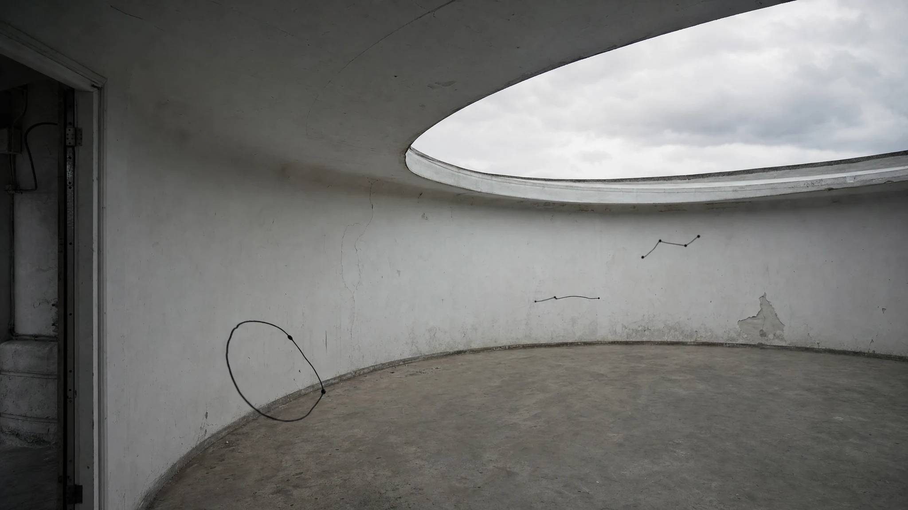

Spatial Synth Maestro — an orchestra of ink for Apple Vision Pro


Drag the hand over drawings to play their sounds. Release to stop. With a keyboard, press Space to grab, use arrow keys to move, and press Space or Escape to release. Home returns the hand. The speaker button mutes hand sounds.
A black hand and three native instrument drawings occupy different depths. Grab and move the hand to explore quiet sounds. This is artwork, not headset footage.
listen.
Actual native synthesis and ink, rendered as six studio sound studies. This is not headset footage or a spatial-audio demonstration. No microphone input or user recordings are used.
elsewhere.

one hand.
new consequences.


A new print. The instruments are unchanged.
a way back.
one minute.